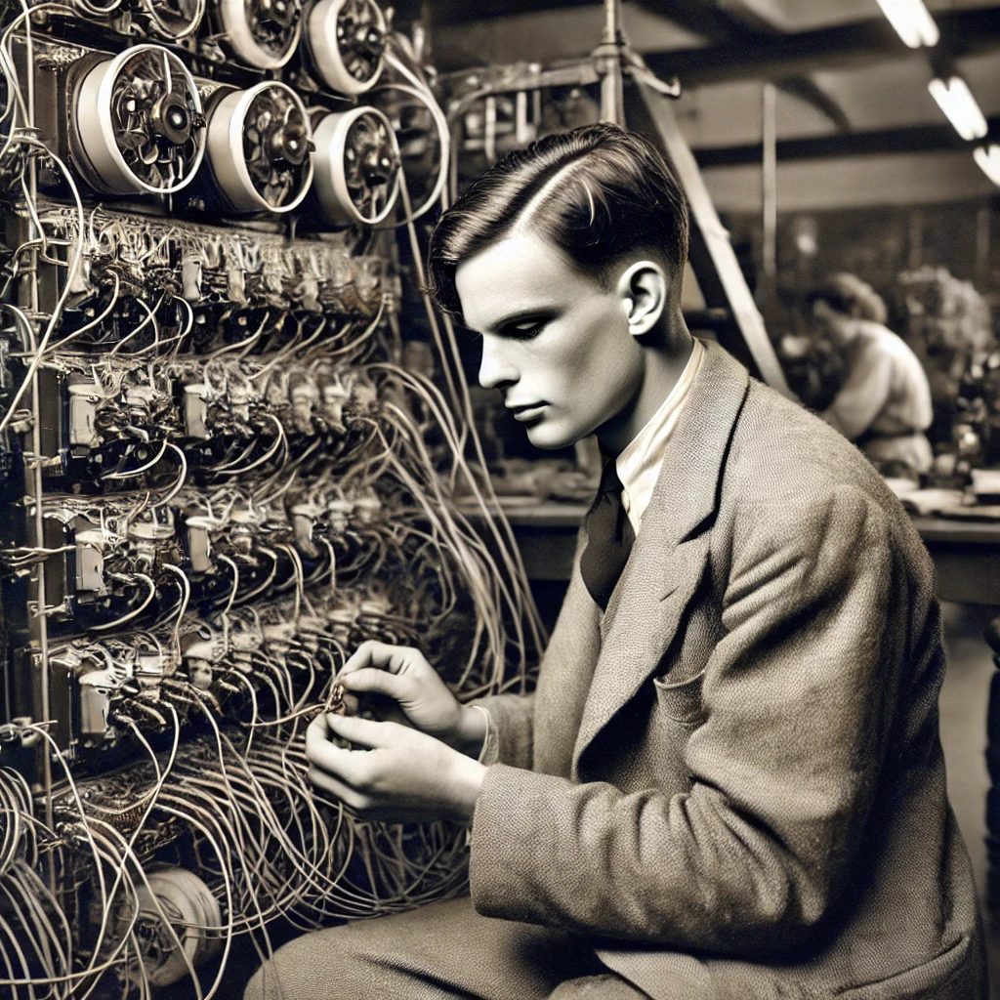

During World War II, Alan Turing worked at Bletchley Park, where he played a pivotal role in cracking the Enigma code used by Nazi Germany. His work helped shorten the war and save countless lives.
Turing’s development of the Bombe, a machine designed to break the Enigma cipher, was critical in deciphering encrypted German communications.
The audio below is a rare archive, recorded by a BBC journalist. This previously unheard recording was recently discovered by chance in the BBC's archives, providing a unique glimpse into the secretive work conducted at Bletchley Park.
Back to main page